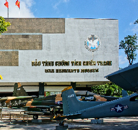
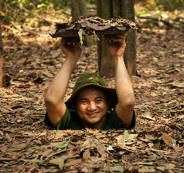
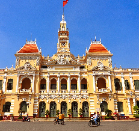
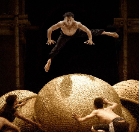
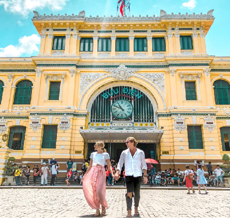

尋歷史
循著歷史的時光機 我們看見了過去
也更清楚了眼前這片土地
經歷了大大小小戰爭的歷史動盪，每每在這片土地上留下無法逝去的回憶與足跡，有的是美麗的異國風情，有的是令人心碎的不治之症，或許歷史的故事我們無法一一細數，但戰爭的殘酷，卻是您我都需放在心中警惕的，走進這段歷史的長廊，讓我們的旅程，增添另一股風情與感受。

戰爭遺跡博物館
收藏越戰時期，美軍的武器、刑具與歷史照片，藉由越南歷史上沉痛的篇章，對比館外繁華的街景，提醒你我，和平的珍貴。

古芝地道
想在旅行中深入了解越戰，不妨安排古芝地道行程，透過園區保留的各種越南游擊隊遺跡與導覽，猶如親身經歷這場戰役。

人民委員會
超過百年歷史的人民委員會大廳,有著顯眼的法式風格,雖然高度不那麼壯闊,但淺黃色的外觀,在夕陽的照映下,仍顯得耀眼且氣勢非凡。

西貢歌劇院
由法國人於西元1900年修建，歷經時代變遷，仍不減當初華麗的樣貌，至今仍有藝文表演於此演出，讓藝術持續於此流傳。

中央郵局
美輪美奐的中央郵局仍保有郵政服務，是觀光的好景點，也是旅途中，想寫張明信片跟親友分享旅途的點滴的好去處。
夜放鬆
走了一天的行程 到了夜晚
選擇一個適合放鬆的方式駐足
至國外旅遊，總連夜間的時間也想好好把握，不論是想和三五好友閒聊放鬆的酒吧，或是到夜店派對狂歡，胡志明皆有不同風格的選項供您選擇，若是想單純的沉靜放鬆，平價且品質優量的按摩好店，也是旅人放鬆不可錯過的選擇, 璀璨的胡志明,讓旅人一天24小時都精彩!
按摩
旅行最大的目的在於放鬆,到了夜晚,好好的按摩充電,讓隔天的旅途充滿活力!
-Massage 137
-Miu Miu
-Golden Lotus
-SPA La Sen
-Ashikatahonpo
BAR & CLUB
期待已久的一場假期終於到來,對酒精與音樂的渴望,到了胡志明,儘管參考下列選項,前往釋放。
-Chill Sky Bar
-Glow Sky Bar
-Air 360 Sky Lounge
-Lush
-Envy Club
碧文街
入夜之後走進五光十色的碧文街，猶如進入一場派對嘉年華，各式風格的酒吧林立，伴隨著令人熱血沸騰的音樂，就讓我們舉杯，慶祝當下的愉悅。
按摩
旅行最大的目的在於放鬆,到了夜晚,好好的按摩充電,讓隔天的旅途充滿活力!
-Massage 137
-Miu Miu
-Golden Lotus
-SPA La Sen
-Ashikatahonpo
BAR & CLUB
期待已久的一場假期終於到來,對酒精與音樂的渴望,到了胡志明,儘管參考下列選項,前往釋放。
-Chill Sky Bar
-Glow Sky Bar
-Air 360 Sky Lounge
-Lush
-Envy Club
碧文街
入夜之後走進五光十色的碧文街，猶如進入一場派對嘉年華，各式風格的酒吧林立，伴隨著令人熱血沸騰的音樂，就讓我們舉杯，慶祝當下的愉悅。
備行囊
建議以3-4天的輕旅行瀏覽這座城市
從行李的準備 揭開旅行的序幕
護照
-需有6個月以上有效期限才得以入境。

天氣
-分為乾溼兩季，雨季介於五到十一月之間，年最高溫有時發生在四月，達到39 °C，最低溫發生在十二月下旬，約16 °C。
簽證
-可至旅行社、駐台北越南經濟文化辦事處辦理，或於出發前透過網路代辦申請落地簽，再攜帶相關文件於胡志明機場完成辦理手續。

電壓
-插座孔與台灣一致，但電壓為２２０Ｖ，若從台灣攜帶電器用品，須另行攜帶變壓器前往。
換匯
-可於台灣或是胡志明的機場、銀行，或是胡志明有提供換匯服務的金店當鋪以美金進行換匯手續。

交通
-主要計程車車隊為VINASUN，亦有公車或機車租賃選擇，或是下載叫車APP：GRAB，也是相當方便的交通選項。
語言
-當地主要語言為越南語，但胡志明市國際化程度高，除小攤販外，多可使用英文溝通，部分店家甚至可以中文溝通。

通訊
-越南電信公司主要有VITTEL與VINA PHONE兩間，可於機場出境後至電信公司櫃檯或是至路上手機行購買短天數具有4G服務電話卡。
護照
-需有6個月以上有效期限才得以入境。
天氣
-分為乾溼兩季，雨季介於五到十一月之間，年最高溫有時發生在四月，達到39 °C，最低溫發生在十二月下旬，約16 °C。
簽證
-可至旅行社、駐台北越南經濟文化辦事處辦理，或於出發前透過網路代辦申請落地簽，再攜帶相關文件於胡志明機場完成辦理手續。
電壓
-插座孔與台灣一致，但電壓為２２０Ｖ，若從台灣攜帶電器用品，須另行攜帶變壓器前往。
換匯
-可於台灣或是胡志明的機場、銀行，或是胡志明有提供換匯服務的金店當鋪以美金進行換匯手續。